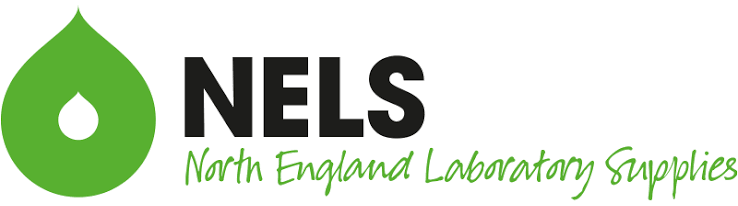
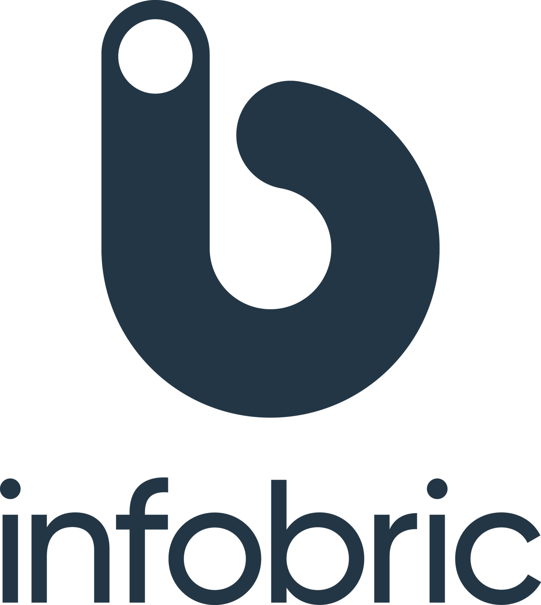
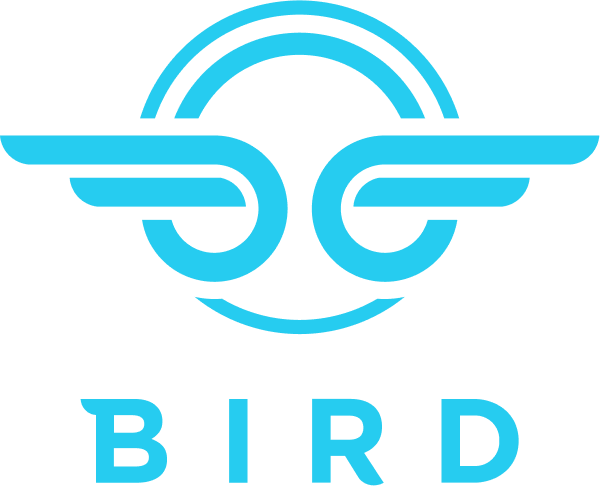

Laboratory supplies · UK
BEYOND WORK SALES OPERATIONS
Beyond Work builds your prospect list, finds the right decision maker, and emails until they reply. When they do, we forward it to you. Your team only talks and closes.
Built for B2B sales and marketing teams that would rather sell than search.
412 companies, 468 decision makers verified
Written around each prospect’s own situation
Head of Operations, mid-size logistics firm. Your next step: pick a time and take the call.
Illustrative workflow example, not actual campaign results.
01 / THE PROBLEM
Reps spend only 30% of their week selling (Salesforce, State of Sales 2024). The rest goes on finding names, checking titles, writing emails and chasing silence. We take all of it.
02 / HOW IT WORKS
We run the time-consuming part and hand you the conversation once it becomes an opportunity.
We research companies that match your ideal customer.
We find who owns the budget and the problem.
We track hiring, funding and email activity to know who is ready.
We send and follow up without dropping the thread.
We forward the reply. Your team talks, presents and closes.
Working as your dedicated sales operations team.
03 / CUSTOMERS
Seven clients, seven industries, and results they can measure.

Laboratory supplies · UK
Packaging · UK and EU
Signage · UK

Gaming · Global

Construction tech · Europe
Sports technology

Urban mobility
Tell us who you want to meet.
more meetings booked in the quarter after list handoff · Big Games Machine
for six-country research, down from 24 weeks · Infobric
data integrity maintained on an ongoing database · MATCHi
04 / WHY TRUST US
Messaging is agreed in your voice first. Nothing goes out unseen.
The lists, the research and every reply belong to you, even if you leave.
A weekly email shows who was contacted, what was sent and what came back.
Every email is relevant, honest and includes an easy opt-out.
Tell us who you want to meet. We’ll do the finding, the writing and the following up.